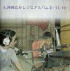

五つの赤い風船結成35周年企画として、2002年3月6日にビクターエンターテインメントより、「西岡たかし／五つの赤い風船」CD-BOXを発売いたしました。300曲あまりの「西岡／風船」の音源より、西岡本人の選曲で80曲をCD５枚組に収めました。
(五つの赤い風船公式ページより引用)
「西岡たかし／五つの赤い風船」CD-BOX
（'69〜'72） （'73〜'76〜'79） （'75〜'76）
（'77〜'78） （'71,'79〜'81）

| 曲名 収録アルバム |
●１．「五つの赤い風船（'69〜'72）」
1 遠い世界に シングル2 恋は風に乗って シングル3 遠い空の彼方に フォークアルバム第１集4 一つのことば フォークアルバム第１集5 時計 フォークアルバム第１集6 唄（ライブ） フォークアルバム第２集7 時は変わってしまった フォークアルバム第２集8 小鳥は自由に飛ぶものです シングル9 小さな夢 フォークアルバム第２集10 小石をけってみよう 五つの赤い風船ラスト・アルバム11 私は広い海に出る 五つの赤い風船ラスト・アルバム12 風がなにかを・・・ 五つの赤い風船ラスト・アルバム13 美しいものは（ライブ） 五つの赤い風船ベスト・コレクション14 母の生まれた街 五つの赤い風船 IN U.S.A15 もしもボクの背中に羽根が生えていたら 五つの赤い風船 IN U.S.A16 まぼろしのつばさと共に 五つの赤い風船 IN U.S.A17 てるてる坊主 五つの赤い風船 IN U.S.A18 これがボクらの道なのか 五つの赤い風船 IN U.S.A全曲、作詞・作曲：西岡たかし 8 / 演奏：吉永小百合・五つ赤い風船 ほかすべて / 演奏：五つ赤い風船 |
●２．「西岡たかしライブ（'73〜'76〜'79）」
1 貝殻節 西岡たかしとたくさんの風船達2 メドレー：風の人〜これがボクらの道なのか〜もしもボクの背中に羽根が生えていたら〜風の人 十年目・西岡たかし/大阪ライブ3 英雄“風” 十年目・西岡たかし/大阪ライブ4 ボクたち大阪の子どもやでェ！ 十年目・西岡たかし/大阪ライブ5 大阪弁 西岡たかしとたくさんの風船達6 哀しい歌 ライブ・夢商人7 花と空に・・・ ライブ・夢商人8 めし屋 ライブ・夢商人9 べろろん・ワルツ 西岡たかしライブ 西岡たかしライブ 10 満員の木 西岡たかしとたくさんの風船達11 血まみれの鳩 西岡たかしとたくさんの風船達12 遠い世界に 西岡たかしとたくさんの風船達1 / 作詞：松本穣葉子 作曲：西岡たかし ほかすべて / 作詞・作曲：西岡たかし 1.5.10.11.12 / 歌・ギター：西岡たかし 指揮：石丸寛 演奏：日本フィルハーモニー交響楽団 ほかすべて /演奏：西岡たかし 録音データ： 1.5.10.11.12 S48.4.19 新宿厚生年金ホール 2.3.4. S54.1.13 大阪厚生年金ホール 6.7.8.9. S50.11.3 中野サンプラザ |
●３．「西岡たかしソロアルバム１（'75〜'76）」
1 プロローグ 哀しい歌 2 なつかしの金魚鉢 哀しい歌 3 心から愛をこめて 哀しい歌 4 すとらいき 哀しい歌 5 君の気持ち 哀しい歌 6 アファヌスそよ風 哀しい歌 7 WIND'Y SOUP スープ 8 上野市 スープ 9 トマト スープ 10 サラダ スープ 11 花と空に・・・ スープ 12 君がやって来る 風博士 13 春には一つの思い出を 風博士 14 夏 風博士 15 PLASTIC WIND (Part1) 風博士 16 かえり道 風博士 17 風博士 風博士 1 / 作曲：西岡たかし ほかすべて / 作詞・作曲：西岡たかし 全曲、演奏：西岡たかし |
●４．「西岡たかしソロアルバム２（'77〜'78）」
1 愛すコーヒー 私の耳はロバの耳 2 あなたの夢 私の耳はロバの耳 3 うろこ雲の絵 私の耳はロバの耳 4 バラのお嬢さん シングル 5 君は今が美しい シングル 6 ロバの耳 私の耳はロバの耳 7 風っ子 子供達に贈る愛の詩 8 それからね 子供達に贈る愛の詩 9 仔犬のシロ 子供達に贈る愛の詩 10 日曜日 子供達に贈る愛の詩 11 おかあさんの手 子供達に贈る愛の詩 12 汽車に乗り遅れた僕が モ ス 13 赤ちゃんグモ モ ス 14 モス モ ス 15 一枚のレコード シングル 16 君のひとみの歌 シングル 4.7.8.9.10.11 / 作詞：イルカ 作曲：西岡たかし ほかすべて / 作詞・作曲：西岡たかし 7 / 演奏：西岡たかし コーラス：劇団若草 ほかすべて / 演奏：西岡たかし |
●５．「西岡たかしソロアルバム３（'71,'79〜'81）」
1 そんなに愛が欲しいのなら シングル 2 気ままな暮らし シングル 3 君のスターライト・シップ シングル 4 倖せの魔法 シングル 5 美津子 シングル 6 秋 田舎町のうまい酒 7 天草の思い出 田舎町のうまい酒 8 八千代旅館 田舎町のうまい酒 9 背中 田舎町のうまい酒 10 秋と言えば 田舎町のうまい酒 11 田舎町のうまい酒 田舎町のうまい酒 12 舵—Rudder らいふ 13 いちろ らいふ 14 Blue らいふ 15 雨—Rainy らいふ 16 いつも・Stranger らいふ 17 美しい人生 らいふ 全曲、作詞・作曲：西岡たかし 3 / 演奏：四重人の奏賊 ほかすべて / 演奏：西岡たかし |
| コメント（おおふじ） |
| ５枚のＣＤは、五つの赤い風船公式サイト（五つの赤い風船事務所）で行われた、ファン の投票に基づいて（どこまで重視されたかは不明ですが）、西岡さんが選曲したそうで す。１枚ずつ西岡さんが選曲について、当時の思い出をはさみつつコメントしています。 このＣＤアルバムは、２つの点で貴重だと私は思っています。 一つは、今までＣＤ化されていなかった曲が数多く含まれている点です。風船の楽曲は１ ９８９年頃から何度かＣＤ化されました。しかし、ビクター音源の楽曲、主に西岡さんのソ ロは、「西岡たかしとたくさんの風船達」「スープ」を除いてＣＤ化されていません。全曲集 でないのは残念ですが（西岡さんご自身もそうコメントしていますね）、部分的にせよＣＤ に復刻されたことはうれしい限りです。なぜ、ビクターはＣＤ復刻を２枚で中断してしまっ たのでしょう。 同様に、シングル盤でのみ聴けた楽曲のＣＤ化も貴重です。私自身は、「美津子」に興味 津々でした。公式サイトの掲示板で、この曲が「日の出食堂の青春」のテーマに歌詞が 付いた曲だと教えてもらい、すごく驚いたものです。原曲は、1982年にNHK FMで放送さ れた、西岡さんと山本コータローさんのスペシャル番組で聴くことができました。西岡さん がコンピューターで製作した曲で、電子音楽の走りだったのではないでしょうか。 二つめは、ＣＤボックスの解説本です。レコードジャケットのカラー写真、西岡さん自身の コメント、ディスコグラフィ、そしてプロフィール（バイオグラフィ）。風船と西岡さんの軌跡を たどる得難い資料集になっています。風船や西岡さんを語る評論家は多いけれど、この ような形で全体像をまとめあげられられる人はいないと思います。 歌詞が１冊の本にまとめられているのも特長です。その昔、ＬＰを聴きながら歌詞カード を広げていたことがなつかしいですが、今、ＣＤを聴きながら、このコンパクトな冊子で歌 詞をなぞっていくのは楽しいものです。 「うろこ雲の絵」を聴きながら歌詞を読むと、この曲の印象が新たになりました。ほのぽ のとした温かさが染みてくる名曲ですけれど、歌詞には西岡さんらしい、突き詰めた表現 や自分を鋭く見つめる視点が散りばめられていますね。西岡さんの詞（ことば）を受けと め直しているこの頃です。 あと、変な使い方ですけれど、この解説本だけを持ち出して歌詞を読むと、脳内プレヤー が演奏してくれるんですね。ヘッドホンステレオなんかなくても、演奏を楽しめるわけで す。（ファン仲間ならわかっていただけるかと・・・） あえてわがままな希望を言えば、やはり全曲集がほしいです。思い入れの深いアルバム は、曲の順番が体に染み込んでいますから、別の曲が続くと、あれっ、と違和感がありま す。ＬＰを引っ張りだして聴くにはそれなりに覚悟がいりますし。風船関係のＬＰはほぼＣ Ｄ化されましたから、ビクターのまだＣＤ化されていないアルバムだけは、ぜひ復刻してい ただきたいな、と願っています。できるなら「西岡たかし全仕事」というＣＤボックスがほし いです。（ファンの夢は贅沢に広がるばかりです・・・） |
|